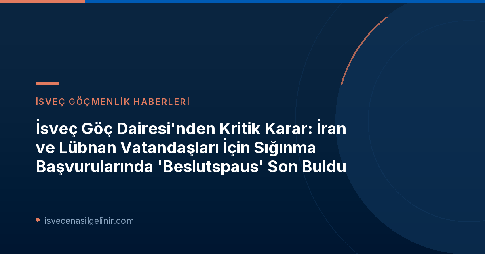

Kararın Arka Planı: Neden Bir Karar Duraklatması Uygulanmıştı?
İsveç Göç Dairesi (Migrationsverket), 2026 yılının başında hem İran hem de Lübnan için sığınma başvurularındaki ret kararlarının alınmasını geçici olarak durduran bir "karar duraklatması" (beslutspaus) uygulamasına gitmişti. Bu kararın temelinde, her iki ülkedeki olayların belirsizliği ve bilgi eksikliği yatıyordu. Migrationsverket, bu belirsizliğin, sığınma başvuruları hakkında ileriye dönük, sağlam değerlendirmeler yapmayı imkansız hale getirdiğini belirtmişti.
- İran İçin: 2025 yılının sonu ve 2026 yılının başlarında İran'daki gelişmeler ışığında, 14 Ocak 2026 tarihinde İran vatandaşlarının sığınma başvurularındaki ret kararlarının duraklatılması yönünde bir tavsiye kararı alındı.
- Lübnan İçin: Benzer şekilde, Mart 2026 başında Lübnan'daki gerginliğin artmasıyla birlikte, 6 Mart 2026 tarihinde Lübnan vatandaşları için de benzer bir tavsiye kararı yürürlüğe kondu.
Bu duraklatma, ilgili ülkelerden gelen sığınmacıların başvurularında ret kararı verilmemesi anlamına geliyordu, ta ki durum netleşene kadar. İsveç'te sığınma arayan herkesin haklarını korumak ve adil bir değerlendirme süreci sağlamak amacıyla atılan bu adım, Migrationsverket'in uluslararası yükümlülükleri çerçevesinde alınan önemli bir tedbirdi. İsveç Vatandaşlık Testi hakkında güncel bilgilere bu bağlantıdan ulaşabilirsiniz.
Beslutspaus Neden Sona Erdi? Migrationsverket'ten Yeni Raporlar
Migrationsverket, İran ve Lübnan'daki durum hakkındaki bilgi eksikliğini gidermek amacıyla kapsamlı çalışmalar yürüttü ve iki ayrı rapor yayınladı. Bu raporlar, karar duraklatmasının sona ermesinde kilit rol oynadı:
- İran Raporu: İran'daki güvenlik durumu ve insan hakları ihlallerine odaklanan bu rapor, ülkedeki güncel koşullar hakkında detaylı bir analiz sunuyor.
- Lübnan Raporu: Lübnan'daki güvenlik durumunu mercek altına alan diğer rapor ise, ülkedeki istikrarsızlık ve potansiyel riskler hakkında yeni bilgiler içeriyor.
Migrationsverket, bu yeni raporların kendilerine ileriye dönük değerlendirmeler yapabilmek için yeterli ve kapsamlı ülke bilgisi sağladığını belirtti. Bu sayede, belirsiz bilgi durumu ortadan kalktığı için, karar duraklatması tavsiyeleri geçerliliğini yitirdi ve kurum normal değerlendirme düzenine geri dönebildi.
Başvuru Sahipleri İçin Ne Anlama Geliyor?
Karar duraklatmasının sona ermesi, İran ve Lübnan vatandaşlarının sığınma başvurularının artık standart prosedürlere göre değerlendirileceği anlamına geliyor. Bu durumun başvuru sahipleri için önemli etkileri olacaktır:
- Ret Kararlarının Yeniden Alınması: Daha önce belirsizlik nedeniyle askıya alınan ret kararları, yeni ülke raporları ışığında tekrar alınmaya başlanabilir.
- Normal Değerlendirme Süreci: Başvurular, Migrationsverket'in güncel ülke bilgileri ve yasal çerçevesi doğrultusunda bireysel olarak incelenecektir. Her bir başvuru sahibinin durumu, ülkesindeki güvenlik ve insan hakları koşulları göz önünde bulundurularak detaylıca değerlendirilecektir.
Önemli Bilgiler ve Süreç Değişiklikleri
- Uygulama Alanı: İran ve Lübnan vatandaşlarının sığınma başvuruları.
- Başlangıç Tarihi: 19 Kasım 2026 (Duyuru tarihi itibarıyla).
- Önceki Durum: Belirsiz bilgi nedeniyle ret kararları duraklatılmıştı.
- Yeni Durum: Yeni ülke raporları sayesinde karar duraklatması kaldırıldı, normal inceleme süreci devam edecek.
- Etki: Başvuruların, güncel güvenlik ve insan hakları durumları göz önünde bulundurularak bireysel olarak değerlendirilmesi.
Geleceğe Yönelik Beklentiler ve Tavsiyeler
Bu yeni durum, İsveç'te sığınma başvurusunda bulunan İran ve Lübnan vatandaşları için süreçte önemli bir dönüm noktasıdır. Başvuru sahiplerinin ve yasal temsilcilerinin, Migrationsverket'in güncel ülke değerlendirmelerini ve yasal prosedürleri yakından takip etmeleri büyük önem taşımaktadır. Her bireysel durum farklılık göstereceği için, süreç boyunca hukuki danışmanlık almak ve başvurularını güncel bilgiler ışığında sağlamlaştırmak faydalı olacaktır.
Referanslar:
- Migrationsverket Duyurusu: Beslutspaus gällande Iran och Libanon upphör
- sverigemedborgarskapsprov.com
İsveç Göç Süreçleri Hakkında Daha Fazla Bilgi Edinmek İster Misiniz?
İsveç'e göç, sığınma ve vatandaşlık süreçleri karmaşık olabilir. En güncel bilgilere ulaşmak ve doğru adımları atmak için uzmanlarımızla iletişime geçin.